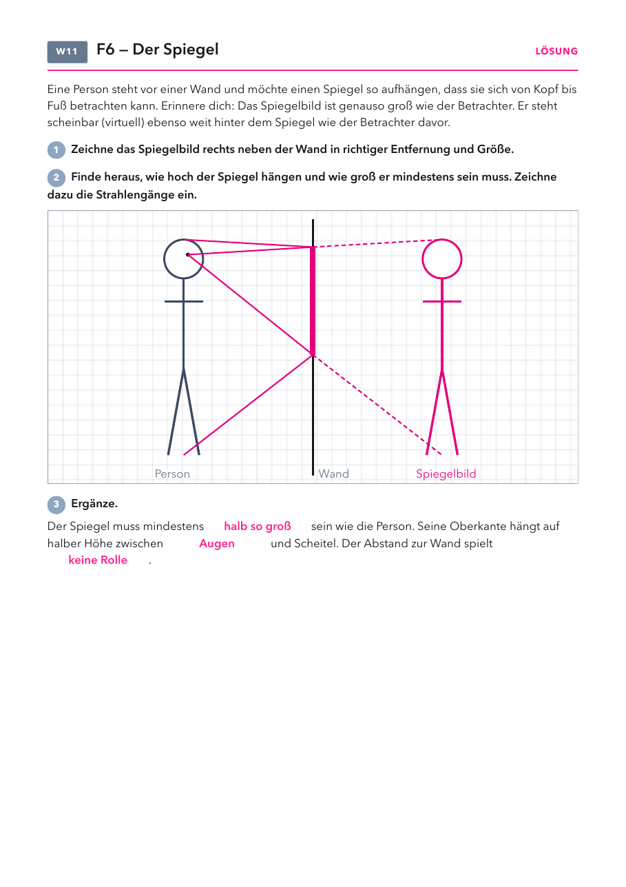

Klasse 7c · Physik · Leitfrage 6, Teil 2 · Spiegelbild und Spiegelgröße · voraussichtlich Do 12.11.2026
| Material | Anzahl | Hinweis |
|---|---|---|
| Glasplatte, senkrecht aufgestellt | 1× | zum Beispiel ein Bilderrahmenglas, Kanten abkleben |
| zwei gleiche Teelichter | 2 | eins brennt davor, eins steht aus hinter der Platte |
| Feuerzeug | 1× |
| Material | Anzahl | Hinweis |
|---|---|---|
| Geodreieck und Bleistift | 1× | zum Konstruieren auf dem Arbeitsblatt |

| im Alltag | was man sieht | warum |
|---|---|---|
| Krankenwagen | AMBULANZ steht spiegelverkehrt | Im Rückspiegel des Autos davor ist die Schrift richtig lesbar. |
| Schaufenster am Abend | du siehst dich in der Scheibe | Glas reflektiert einen kleinen Teil des Lichts. Ist es dahinter dunkel, fällt das auf. |
| zwei Spiegel in der Umkleide | viele Bilder hintereinander | Das Spiegelbild wird im zweiten Spiegel wieder gespiegelt. |
1) Ein Lichtstrahl trifft unter 30° zum Lot auf einen Spiegel. Wie groß ist der Reflexionswinkel?
2) Wo scheint dein Spiegelbild zu stehen?
Spiegelbild mit verschiebbarer Kerze und Auge, Spiegelgröße mit Abstandsregler, Krankenwagen direkt und im Rückspiegel.
Lösung: Spiegelbild gleich groß und gleich weit hinter der Wand. Spiegel halb so groß wie die Person, Oberkante auf halber Höhe zwischen Augen und Scheitel. Lücken: halb so groß, Augen, keine Rolle.